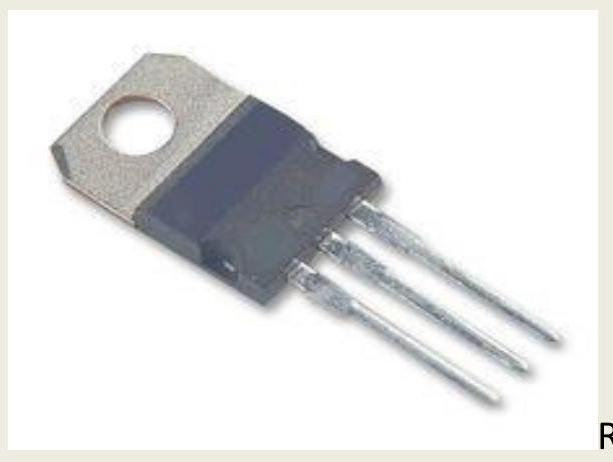
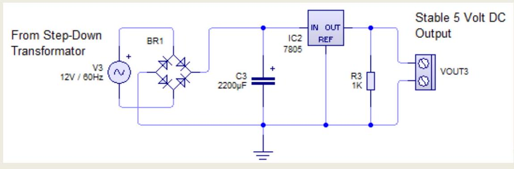
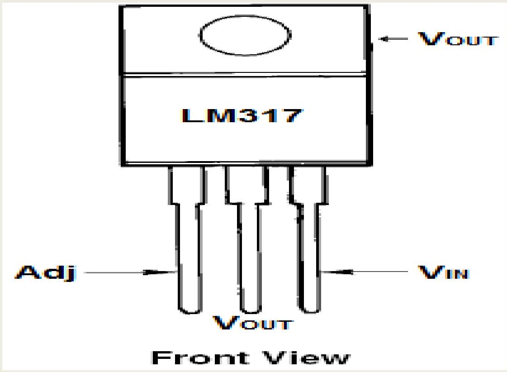
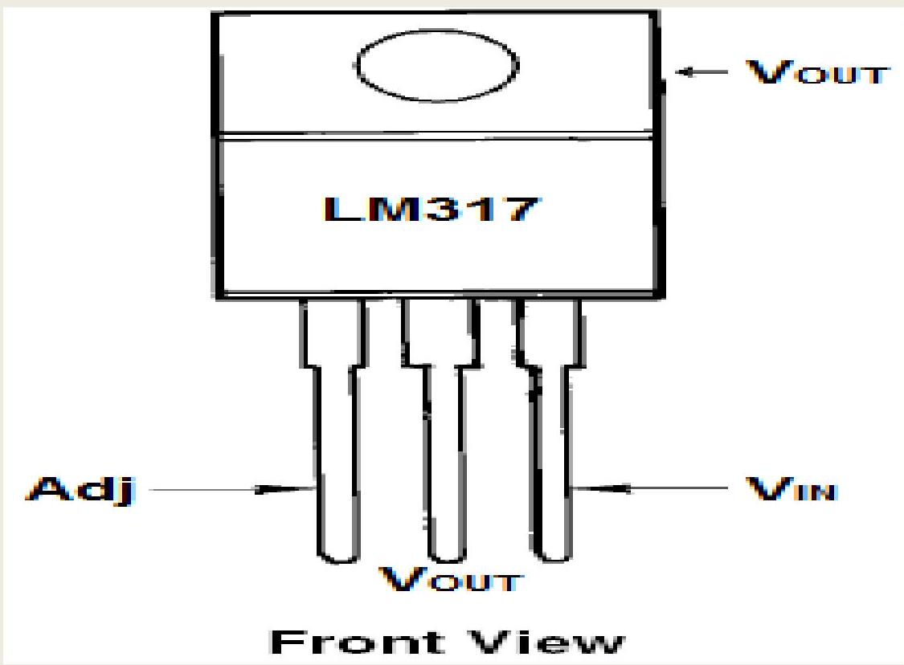
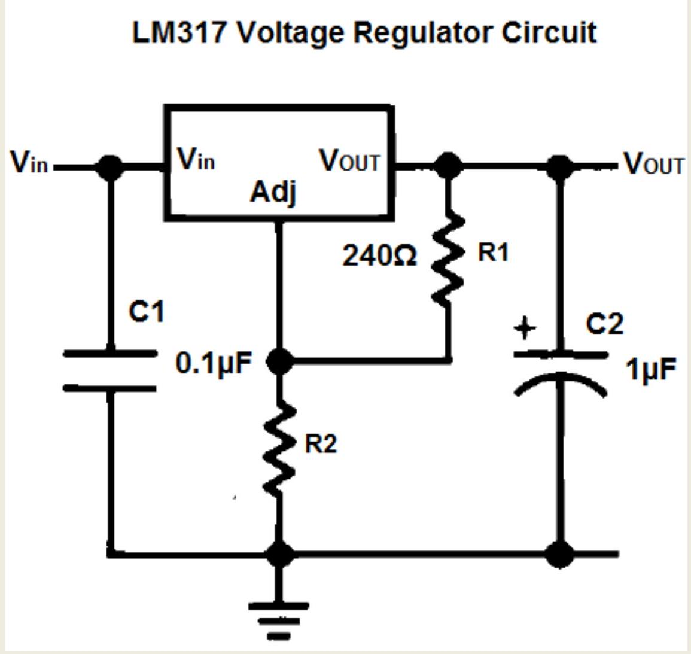
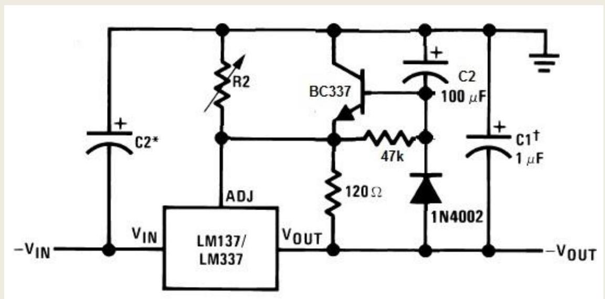
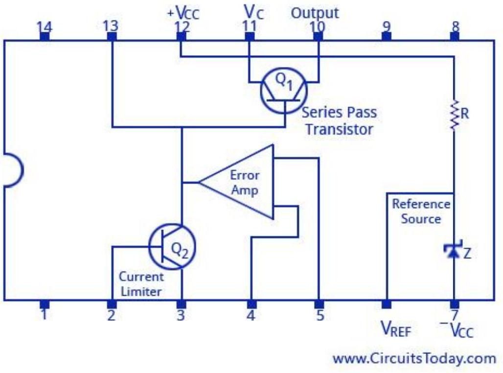
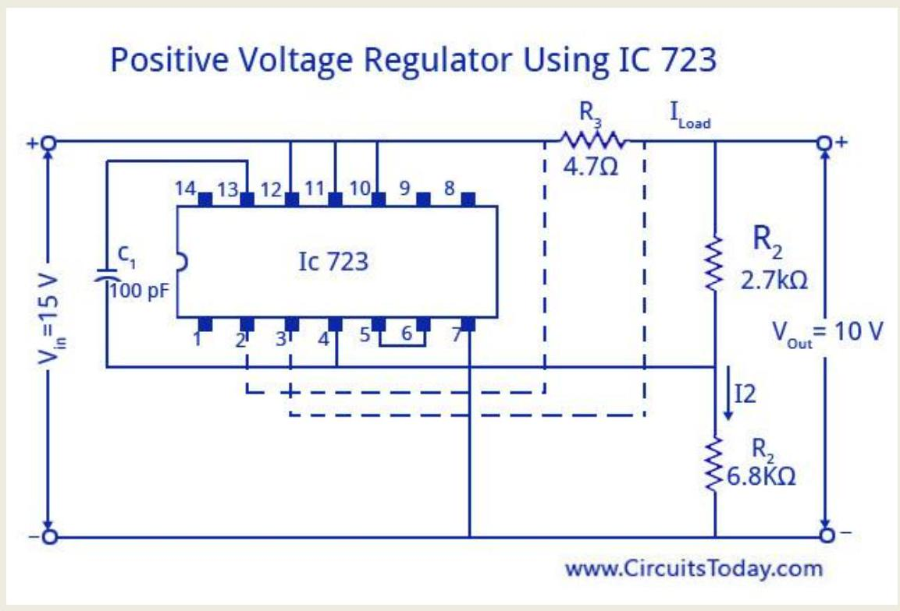

CHAPTER- 6. IC VOLTAGE REGULATORS .
6.1 Explain the operation of power supply using 78XX and 79XX Series (Fixed Voltage Regulator)
Regulator IC 78xx and 79xx
20/05/2014 Kang Pree
As we know that almost all electronic equipment requires a stable DC voltage source in order to operate properly and optimally. Battery and Accumulator is a stable DC voltage source for this purpose. However, the voltage source will continue to decline and eventually run out so that it can no longer be used as an energy source. In this condition a particular brand battery must be replaced with a new battery, but for the other battery and accumulator rechargeable energy can be done.
To charge the battery voltage can disconnect the battery to be recharged, but many electronic devices that provide special charging port so no need to disconnect the battery, the device can even still be able to operate while charging.
Some electronic devices such as laptops, notebooks, and tablets already have automatic re-charging feature while operate the equipment. In other words, the user can use the laptop while charging. The advantages of this system can protect users lose files or disrupted work because when the main AC power off, then the battery will automatically supplying a voltage to the equipment, otherwise when the main power is restored, the battery that had been used can be recharged while continuing to work.
To stabilize the DC voltage can be done in many ways using a variety of electronic components in accordance with a requirement specification of electronic equipment. Electronic components are combined to form a DC regulator circuit, one of the main components for this purpose is a regulator IC 78xx and 79xx.
IC 78xx regulator serves to stabilize the positive DC voltage (positive and ground) while the regulator IC 79xx serves to stabilize the negative DC voltage (ground and negative). "xx" is the two numbers listed on the label IC which is a stable DC voltage that can be generated. Example, IC 7805 produce stable positive DC voltage of +5 volts, the IC 7912 generates a negative DC voltage of -12 volts stable, and so on.
The physical form of the regulator IC 78xx and 79xx are the same, it's just three feet ICs have different functions. For positive voltage regulator IC 78xx, the first leg is the input, the second leg (middle) is ground, and the third leg is the output. For negative voltage regulator IC 79xx, the first leg is grounded, the second leg is the input, and the third leg is the output.
Regulator IC 78xx
regulator IC 78xx and 79xx has characteristics specified by the manufacturer in order to work correctly and optimally, for the purposes of this can be seen through the data-sheet book.
Below is one example of a DC voltage regulator circuit using IC 7805 to produce a stable DC voltage +5 Volt.
Full Wave Regulator
6.2 Draw the functional block diagram of IC regulator LM 723 &LM 317.
LM317 Pinout
The LM317 Voltage Regulator has 3 pins. Below is the pinout:
Looking from the front of the voltage regulator, the first pin (on the left) is the Adjustable Pin, the middle is Vout, and the last pin(on the right) is VIN.
VIN- VIN is the pin which receives the incoming voltage which is to be regulated down to a specified voltage. For example, the input voltage pin can be fed 12 V , which the regulator will regulate down to 10 V . The input pin receives the incoming, unregulated voltage.
Adjustable- The Adjustable pin (Adj) is the pin which allows for adjustable voltage output. To adjust output, we swap out resistor R2 value for a different resistance. This creates adjustable voltages.
VOUT- VOUT is the pin which outputs the regulated voltage. For example, the LM317 may receive 12 V as the input and output a constant 10 V as output.
LM317 Schematic Diagram
Now that you know the pins, how do we modify the voltage to that which we want output?
We do this by changing the value of the resistor connected to the Adj pin of the voltage regulator.
Let's see how the schematic is set up:
6.3 Explain the voltage power supply using LM 317 and LM 337.
LM317 Pinout
The LM317 Voltage Regulator has 3 pins. Below is the pinout:
Looking from the front of the voltage regulator, the first pin (on the left) is the Adjustable Pin, the middle is Vout, and the last pin(on the right) is VIN.
VIN- VIN is the pin which receives the incoming voltage which is to be regulated down to a specified voltage. For example, the input voltage pin can be fed 12 V , which the regulator will regulate down to 10 V . The input pin receives the incoming, unregulated voltage.
Adjustable- The Adjustable pin (Adj) is the pin which allows for adjustable voltage output. To adjust output, we swap out resistor R2 value for a different resistance. This creates adjustable voltages.
VOUT- VOUT is the pin which outputs the regulated voltage. For example, the LM317 may receive 12 V as the input and output a constant 10 V as output.
LM317 Schematic Diagram
Now that you know the pins, how do we modify the voltage to that which we want output? We do this by changing the value of the resistor connected to the Adj pin of the voltage regulator.
Let's see how the schematic is set up:
Here you see we connect two resistors to the voltage regulator. These resistors determine the voltage that the voltage regulator adjusts to and outputs.
The voltage that the adjustable regulator outputs is determined by the equation below:
LM337 Schematic Diagram (Inferred)
6.4 Explain the voltage power supply using LM 723.
IC 723 Voltage Regulators
We have already explained in detail about the basics of regulated power supply, voltage regulators and IC voltage regulators. Let us take a look at one of the most popular IC voltage regulators, the 723 Voltage Regulator IC. The functional diagram of the voltage regulator is shown below. It consists of a voltage reference source (Pin 6), an error amplifier with its inverting input on pin 4 and non-inverting input on pin 5, a series pass transistor (pins 10 and 11), and a current limiting transistor on pins 2 and 3 . The device can be set to work as both posistive and negaive voltage regulators with an output voltage ranging from 2 V to 37 V , and output current levels upto 150 m A . The maximum supply voltage is 40 V , and the line and load regulations are each specified as 0.01%.
IC 723 Voltage Regulator Circuit
IC 723 Voltage Regulator Circuit
We have already explained in detail about the basics of voltage regulators and IC voltage regulators. Let us take a look at one of the most popular IC voltage regulators, the 723 Voltage Regulator IC. The functional diagram of the voltage regulator is shown below. It consists of a voltage reference source (Pin 6), an error amplifier with its inverting input on pin 4 and non-inverting input on pin 5 , a series pass transistor (pins 10 and 11), and a current limiting transistor on pins 2 and 3 . The device can be set to work as both posistive and negaive voltage regulators with an output voltage ranging from 2 V to 37 V , and output current levels upto 150 m A . The maximum supply voltage is 40 V , and the line and load regulations are each specified as 0.01%.
The figure shown below is a positive voltage regulator with an IC 723. The output voltage can be set to any desired positive voltage between (7-37) volts. 7 volts is the reference starting voltage. All these variations are brought with the change of values in resistors R1 and R2 with the help of a potentiometer. A darlington connection is made by the transistor to Q1 to handle large load current. The broken lines in the image indicate the internal connections for current limiting. Even foldback current limiting is possible in this IC. A regulator output voltage less than the 7 V reference level can be obtained by using a voltage divider across the reference source. The potentially divided reference voltage is then connected to terminal 5.
Positive Voltage Regulator Using IC 723
Another importat point to note about this IC is that the supply voltage at the lowest point on the ripple waveform, should be at least 3 V greater than the output of the regulator and greater than Vref . If it is not so a high-amplitude output ripple is possible to occur.